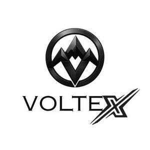

Trade Mark Journal No.2025/044 31 October 2025
UK00004281631 21 October 2025 (18,25,35)

- Class 18
- Duffel bags; Duffle bags; Messenger bags; Bum bags; Small bags for men; Sling bags; Crossbody bags; Drawstring bags; Cross-body bags; Bags for clothes; Gym bags; Sport bags.
- Class 25
- Clothing; Jackets [clothing]; Ready-to-wear clothing; Headbands [clothing]; Gloves [clothing]; Gloves as clothing; Clothes; Shorts [clothing]; Parts of clothing, footwear and headgear; Hoods [clothing]; Windproof clothing; Rainproof clothing; Waterproof clothing; Casual clothing; Jackets being sports clothing; Jackets (Stuff -) [clothing]; Stuff jackets [clothing]; Bottoms [clothing]; Ready-made clothing; Clothing for leisure wear; Infant clothing; Woven clothing; Leisure clothing; Clothing for sports; Sports clothing; Athletic clothing; Clothing for children; Clothing for babies; Tops [clothing]; Clothing for infants; Water-resistant clothing; Weatherproof clothing; Pockets for clothing; Men's clothing; Neck warmers; Neck gaiters; Leggings [leg warmers]; Body warmers; Neck tube scarves; Ankle socks; Coats; Duffle coats; Duffel coats; Winter coats; Light-reflecting coats; House coats; Heavy coats; Rain coats; Sport coats; Down coats; Wind coats; Evening coats; Coats for men; Coats for women; Men's and women's jackets, coats, trousers, vests; Fleece jackets; Quilted jackets [clothing]; Sleeveless jackets; Overcoats; Rainproof jackets; Caps; Caps [headwear]; Caps being headwear; Baseball caps; Peaked caps; Baseball caps and hats; Sports caps and hats; Bucket caps; Sports caps; Beanies; Beanie hats; Hats; Socks; Anklets [socks]; Trouser socks; Sweat-absorbent socks; Men's socks; Socks for men; Sports socks; Socks for infants and toddlers; Leggings [trousers]; Pants; Fleece shorts; Trousers shorts; Babies' pants [clothing]; Sportswear; Casualwear; Menswear; Leisurewear; Gymwear; Outerwear; Sports clothing [other than golf gloves]; Moisture-wicking sports shirts; Clothes for sports; Clothes for sport; Moisture-wicking sports pants; Sports jackets; Jogging sets [clothing]; Sports pants; Moisture-wicking sports bras; Tracksuits; Sweatsuits; Tracksuit bottoms; Tracksuit tops; Hoodies; Tank-tops; Hooded sweat shirts; Waistcoats [vests]; Short-sleeved T-shirts; Hooded sweatshirts; Balaclavas; Sweatpants; Short-sleeved shirts; Windcheaters; Jogging outfits; Jogging bottoms [clothing]; Hooded pullovers; Tee-shirts; T-shirts; Warm-up jackets; Jumpers [pullovers]; Sweat jackets; Sleeved jackets; Sweat shirts; Trousers; Trousers for sweating; Blouson jackets; Gilets; Padded jackets; Cargo pants; Shorts; Swim shorts; Sweat shorts; Gym shorts; Short trousers; Warm-up pants; Jogging pants; Stretch pants; Skorts; Sweatshorts; Baselayer bottoms; Casual trousers; Vest tops; Track pants; Gloves; Gloves for apparel; Mountaineering gloves; Winter gloves; Warm gloves for touchscreen devices; Jackets; Windproof jackets; Bomber jackets; Waterproof jackets; Wind-resistant jackets; Weatherproof jackets; Shell jackets; Reversible jackets; Rain jackets; Casual jackets; Wind jackets; Track jackets; Wind resistant jackets; Jumpers; Jumpers [sweaters]; Crop tops; Coats (Top -); Tops; Hooded tops; Tank tops; Fleece tops; Baselayer tops; Jogging tops; Down jackets; Sports shirts with short sleeves; Capri pants; Yoga pants; Bralettes; Sweat pants; Sweatshirts; Women's clothing; Children's clothing; Childrens' clothing; Girls' clothing; Boys' clothing; Infants' clothing; Babies' clothing; Ladies' clothing; Clothing for men, women and children; Thermal clothing; Articles of outer clothing; Outer clothing; Exercise wear; Bobble hats; Baseball hats; Fashion hats; Bucket hats; Headwear; Sweaters; Vests; Sports vests; Running vests; Athletics vests; Light-reflecting jackets; Long sleeve pullovers; Short sets [clothing].
- Class 35
- Retail services connected with the sale of clothing and clothing accessories; Online retail store services in relation to clothing; Online retail store services relating to clothing; Retail services in relation to clothing; Online retail services relating to clothing; Retail services relating to clothing; Retail services in relation to bags; Retail services in relation to fashion accessories; Retail services in relation to clothing accessories.
Samantha Jessica Bell